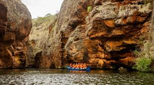

Cânions do Xingó
Os Cânions do Xingó são um dos destinos imperdíveis para os turistas que querem conhecer o sertão nordestino. Seus imponentes paredões mergulhados nas águas do Rio São Francisco são o que dão o toque especial nesta região.
Localizado entre Sergipe e Alagoas, este é reconhecido como o quinto maior cânion navegável do mundo, com as bençãos das águas do Velho Chico.
O que fazer em Cânions do Xingó?
- Fazer trilhas pela região
- Visitar o Centro Histórico de Piranhas
- Visitar o Museu de Arqueologia de Xingó
- Visitar o Paraíso do Talhado, um dos pontos mais estreitos do cânios
- Degustar a culinária local